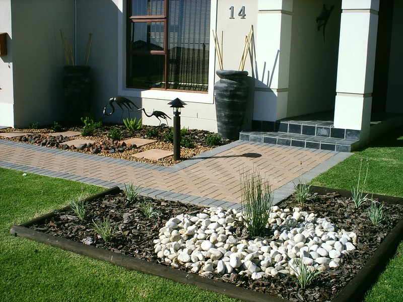
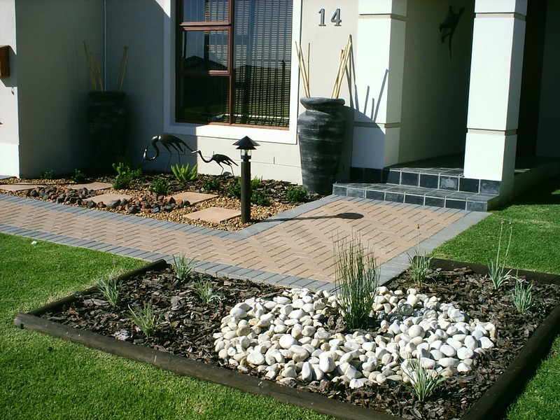
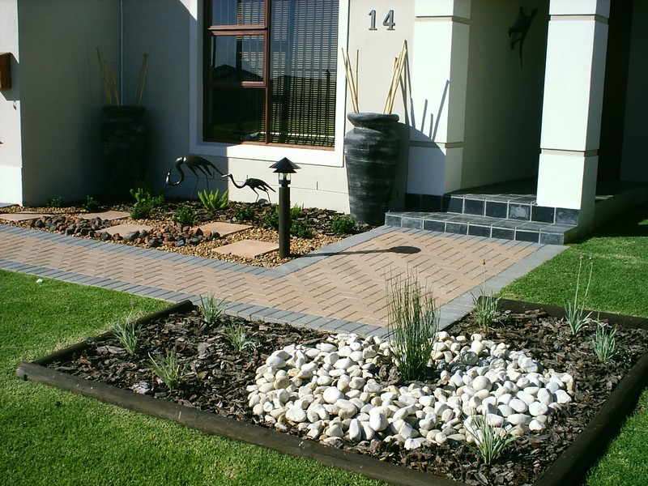
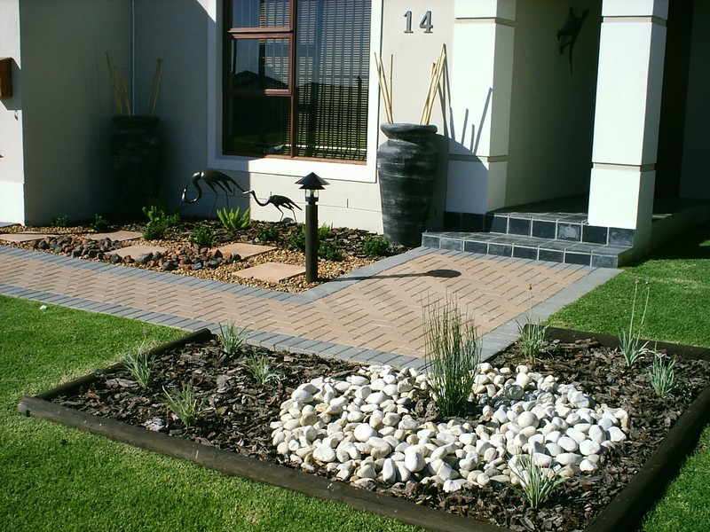

 

Welcome to Pretoria East Tree Felling Services/ Andrew Tree Felling Services, your trusted partner for comprehensive tree care and maintenance in Pretoria East, Pretoria
Central, and surrounding areas. With a commitment to excellence and a passion for preserving the beauty of your landscape, we offer a
range of services tailored to meet your tree-related needs.
NB: We are fully insured against any accident or misfortune.
At Pretoria East Tree Felling Services/ Andrew Tree Felling Services, we take pride in our expertise in tree felling, stump removal, tree trimming, shaping, and post-clearing
refuse removal. Our team comprises dedicated professionals with extensive experience and the latest equipment to ensure efficient and
safe tree care solutions.
Our mission is to enhance the aesthetics and safety of your property while promoting the health and longevity of your trees. Whether it's a
large-scale tree removal or meticulous shaping to enhance your landscape's beauty, we approach each project with precision and care.
What sets us apart is our commitment to customer satisfaction and environmental responsibility. We prioritize eco-friendly practices and
adhere to industry standards to minimize the impact on the environment while delivering top-notch services.

As a locally owned and operated business, we understand the unique needs of our community. We are dedicated to serving our clients with
honesty, reliability, and professionalism, ensuring that every project is completed to your utmost satisfaction.

Contact Pretoria East Tree Felling Services/Andrew Tree Felling Services today to experience excellence in tree care. Let us transform your outdoor space into a safer, more
beautiful environment while leaving it spotless after our work is done.

A day well spent at work making a change in our community.
Once upon a time in Pretoria.
Feel free to adjust or personalize this draft to better match your voice and the specific details of your business!